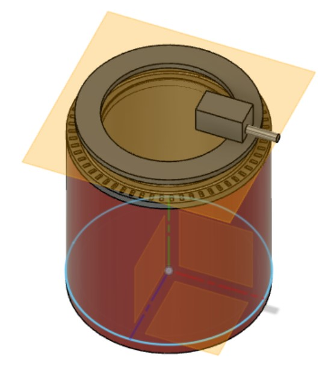
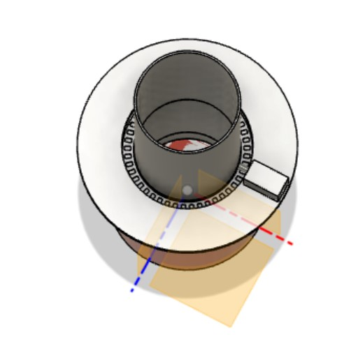

## Week 11
### Monday-Nov 21
I started to develop an idea for an upper connection to the light pipe that would rotate on the drum today in Fusion 360. This is pictured below, and this was my main focus today, alongside thinking about the bearing/caster wheel attachments that would go on the top platform. This top platform would also include mounted stepper motors that I attempted to model to get an idea of the geometry relationships and general construction of the final prototype. Lastly, I modeled what indents would look like on the bottom platform such that gear teeth could catch and move the top relative to the stationary drum. These indentations would be on the outer perimeter of the bottom platform in my current way of thinking as of this Monday.

### Wednesday-Nov 23
Today was a continuation of the CADing that has been done in the past couple of weeks. Today I was considering how arranging the stepper motors to face radially inward differs from them facing radially outward. If the gears run on the outside, then this constrains the upper platform to be much smaller than the bottom platform, which might have issues if we wanted to mount motors and other connections. The tracks would also be closer to the center, which, in my intuition, would be worse because the normal force distribution would not be as effective in counteracting a torque on the top platform. On the other hand, the gears could run on the inside and go next to the light pipe. I believe this design might be more beneficial because the stability of the upper components would likely be better with the wheels more spaced out. Further, with this design, we can afford to make the top platform have a much larger diameter. This means more room to work with for mounting additional joints and connections. I have this CAD model pictured below. After this, the groups working on the degrees of freedom went to 3-001 to 3D print, and I continued to ideate there about what I had been working on.
